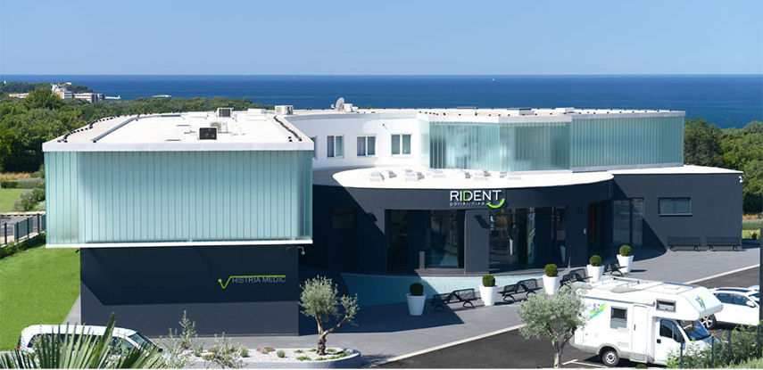

TRIPS TO CROATIA
Autonoleggio Pier has the pleasure of collaborating for several years with the Rident dental practice, for which he travels weekly with departures from Trento and Belluno for interventions lasting even one day.
The first trip is totally free and includes:
- the round trip
- the medical consultation
- the panoramic plate
- the dental visit
For booking your trip or request further information please contact us via phone or email otherwise visit our contact page.
Rident
Rident has been chosen as the International Dental Clinic of the Year!
Policlinic Rijeka

Located in the heart of the Kvarner Bay, Rijeka with its beauty, mild climate and excellent traffic connections attracts numerous guests. In her vicinity lies the famous Riviera of Opatija, one of the oldest and most elite Croatian tourist destinations.
Policlinic Poreč
Poreč, a lovely city on the west coast of the Istrian peninsula, today is considered one of the most visited and important tourist destinations in Croatia.
Policlinic Rijeka
Located in the heart of the Kvarner Bay, Rijeka with its beauty, mild climate and excellent traffic connections attracts numerous guests. In her vicinity lies the famous Riviera of Opatija, one of the oldest and most elite Croatian tourist destinations.
Policlinic Poreč
Poreč, a lovely city on the west coast of the Istrian peninsula, today is considered one of the most visited and important tourist destinations in Croatia.